11 kitap
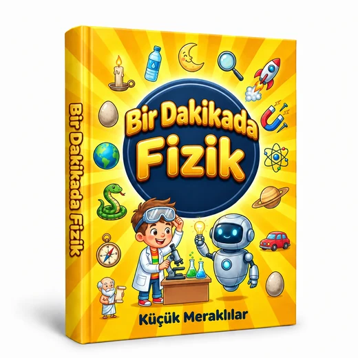
1. kitapBir Dakikada Fizik
Fizik, çocuk diliyle anlatılıyor. Nesneler neden düşer, uçar ya da patlar?
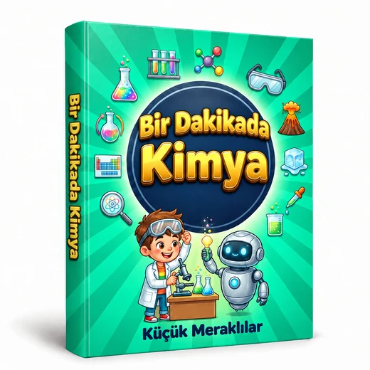
2. kitapBir Dakikada Kimya
Periyodik tablo basitçe anlatılıyor. Atomlar, karışımlar ve şaşırtıcı tepkimeler.
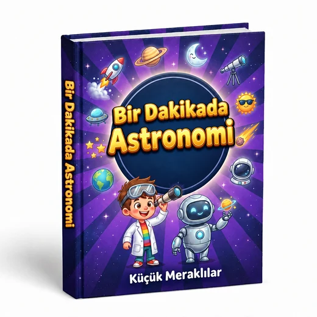
3. kitapBir Dakikada Astronomi
Güneş Sistemi, gezegenler ve yıldızlar. Gökyüzüne bakıp ne gördüğünü anlasın diye.
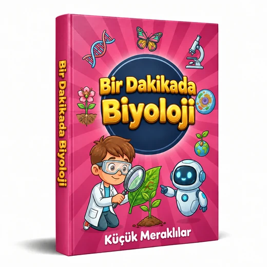
4. kitapBir Dakikada Biyoloji
Canlılar, hücreden ormana. Hücreler, bitkiler ve diğer canlılar.
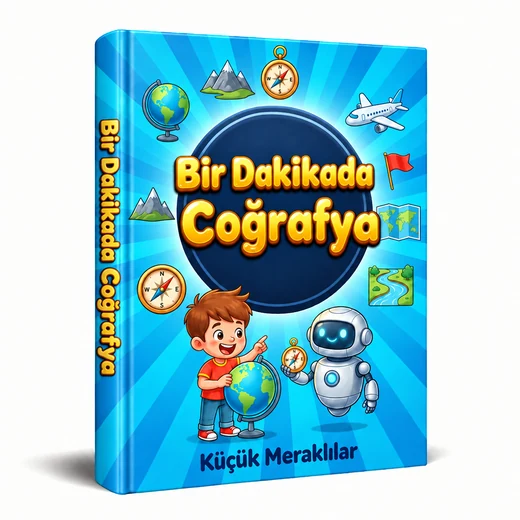
5. kitapBir Dakikada Coğrafya
Ülke ülke dünya turu. Kıtalar, iklimler ve manzaralar.
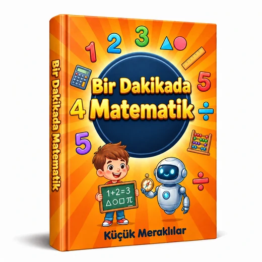
6. kitapBir Dakikada Matematik
Saymak da bir oyun olabilir. Stres olmadan sayılar, şekiller ve mantık.
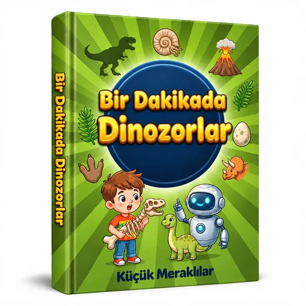
7. kitapBir Dakikada Dinozorlar
Dünyaya hükmeden devler. Fosiller, türler ve hayret verici bilgiler.
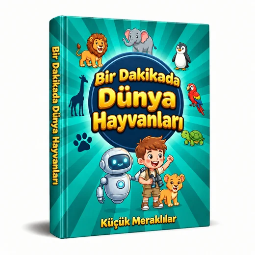
8. kitapBir Dakikada Dünya Hayvanları
Ormandan okyanusa, tür tür. Uydurma sanacağınız hayvanlar.
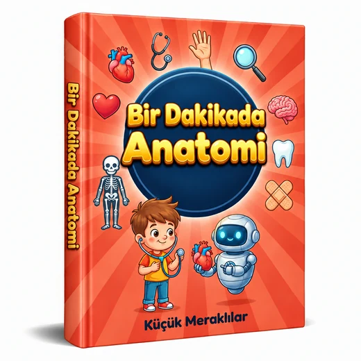
9. kitapBir Dakikada Anatomi
İnsan vücudu basitçe anlatılıyor. Kemikler, organlar ve duyular; karmaşık terimler olmadan.
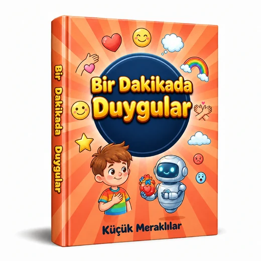
10. kitapBir Dakikada Duygular
Hissettikleri için söz bulmak. Duygularını tanımak ve sakinleşmeyi öğrenmek.
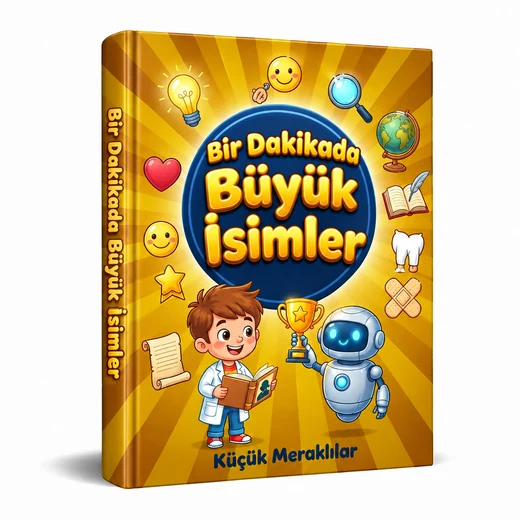
11. kitapBir Dakikada Büyük İsimler
Büyük hayallere ilham veren hayatlar. Dünyayı değiştirenler, gerçek birer macera gibi anlatılıyor.
8 hediye bonusunuz
 1. bonus
1. bonusGüncellemelere Ömür Boyu Erişim
Erişiminizin süresi dolmaz: bu sayfayı istediğiniz zaman yeniden açabilir, her şeyi tekrar indirebilirsiniz.
Aç →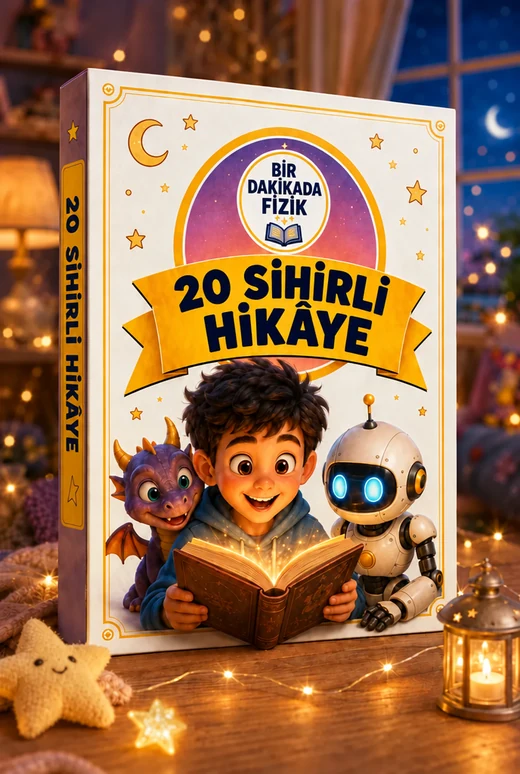
3. bonus20 Sihirli Hikâye
İçinde biraz bilim ve bir ders olan uyumadan önce okunan 20 hikâye; her birinin sonunda sohbet başlatan bir soru.
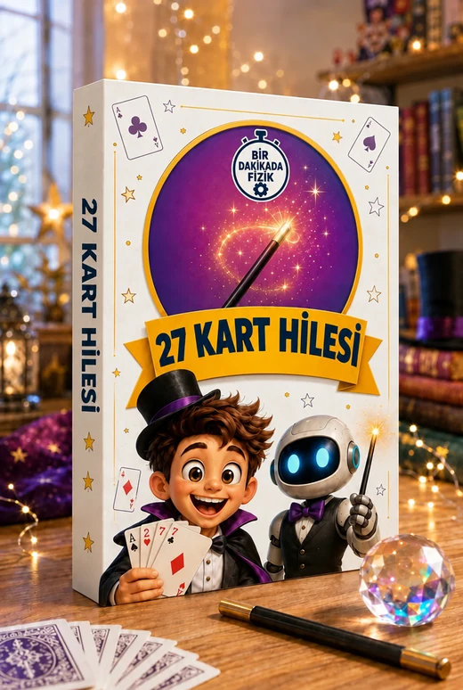
4. bonus27 Kart Hilesi
Bir iskambil destesiyle adım adım 27 sihir numarası.
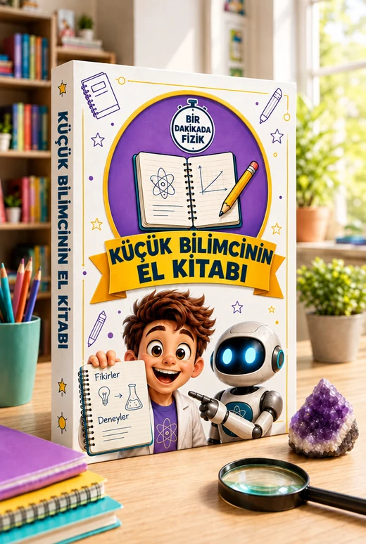
5. bonusKüçük Bilimcinin El Kitabı
Gerçek bir bilim insanı nasıl düşünür? Bilimsel yöntem, güvenlik kuralları, 40 sözcüklük sözlük, gözlem günlükleri ve deney raporları.
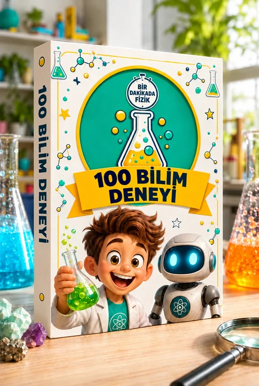
6. bonusEvde Yapılabilecek 100 Bilim Deneyi
Evdeki malzemelerle 100 gerçek deney; her biri altı adım fotoğrafıyla.
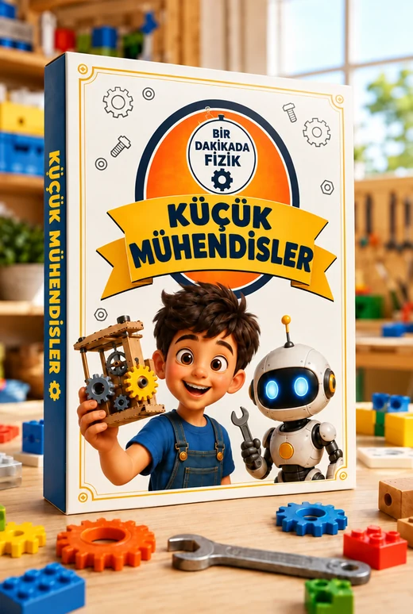
7. bonusKüçük Mühendisler
Karton ve evdeki malzemelerle 20 inşaat projesi: köprü, kule, vinç, mancınık ve çok daha fazlası.
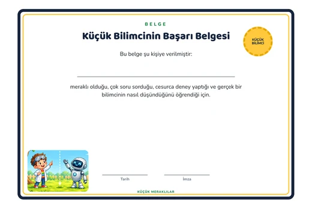
8. bonusKüçük Bilimcinin Başarı Belgesi
Küçük bilimciniz için yazdırılabilir başarı belgesi; üzerine adını da yazabilirsiniz.
Sıradaki Adım
- Bu sayfayı yer imlerinize ekleyin: ömür boyu erişiminizin adresi burası.
- 11 kitabı ve bonusları telefonunuza, tabletinize veya bilgisayarınıza indirin.
- Çocuğunuzun en çok soru sorduğu konuyla başlayın: her kavram bir dakikada okunur.
- Kitapların sonundaki test ve şimşek hızında sorularla neler öğrendiğinizi birlikte görebilirsiniz.
Yalnızca kişisel ve aile içi kullanım içindir. Yeniden satılması ve paylaşılması yasaktır.